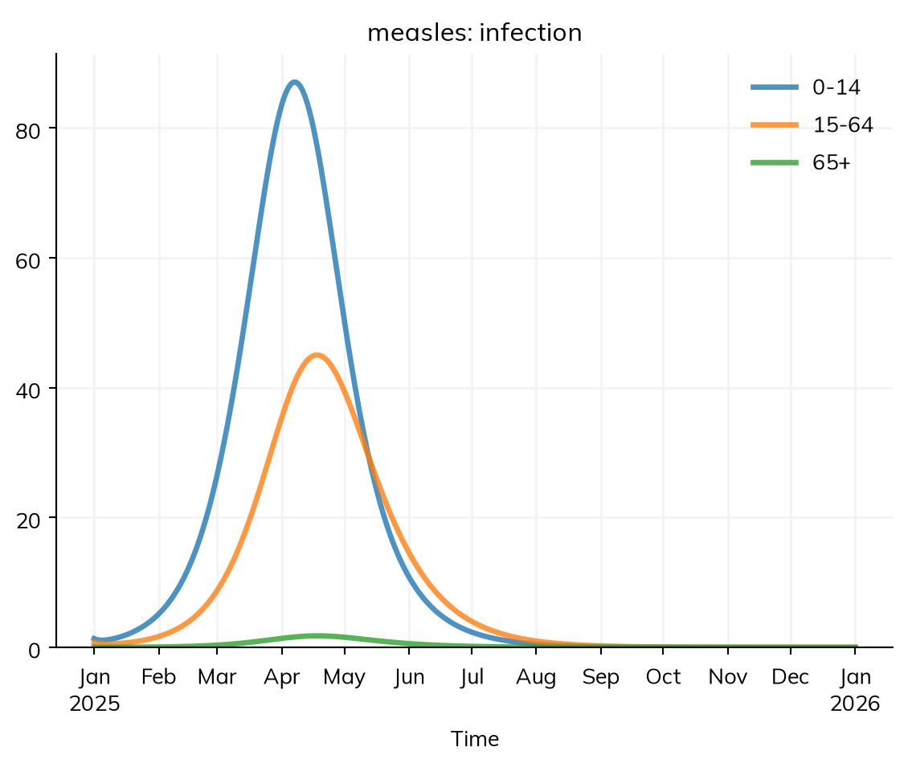
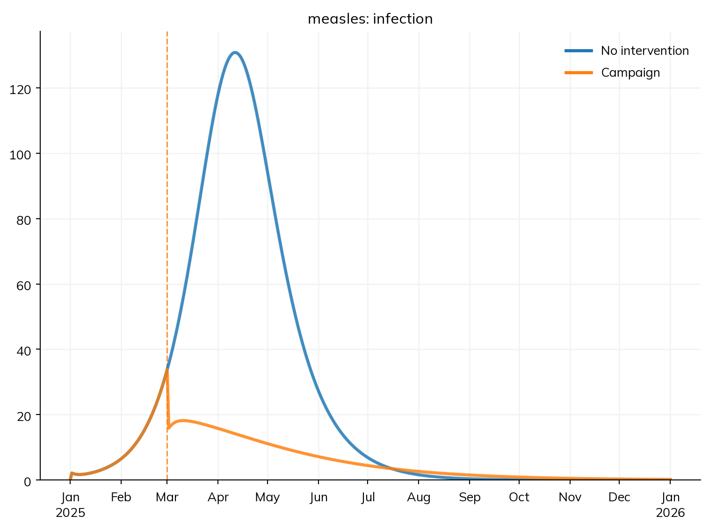
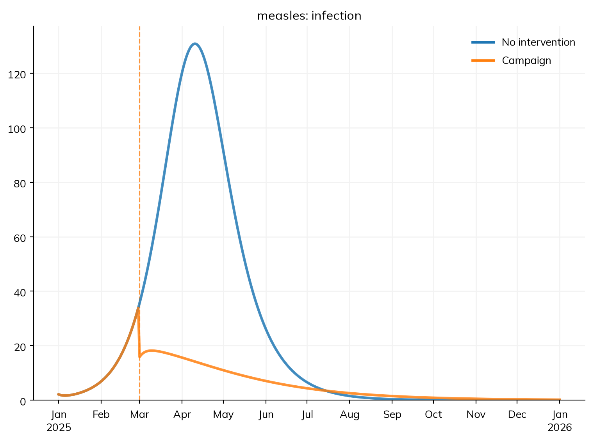
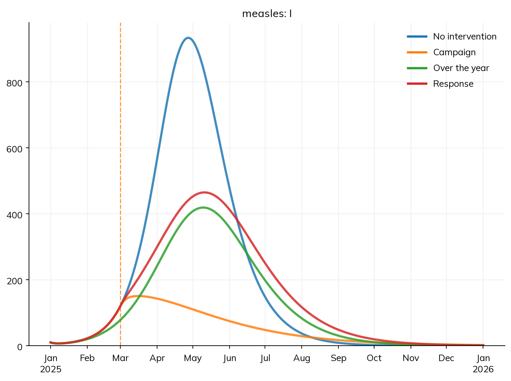
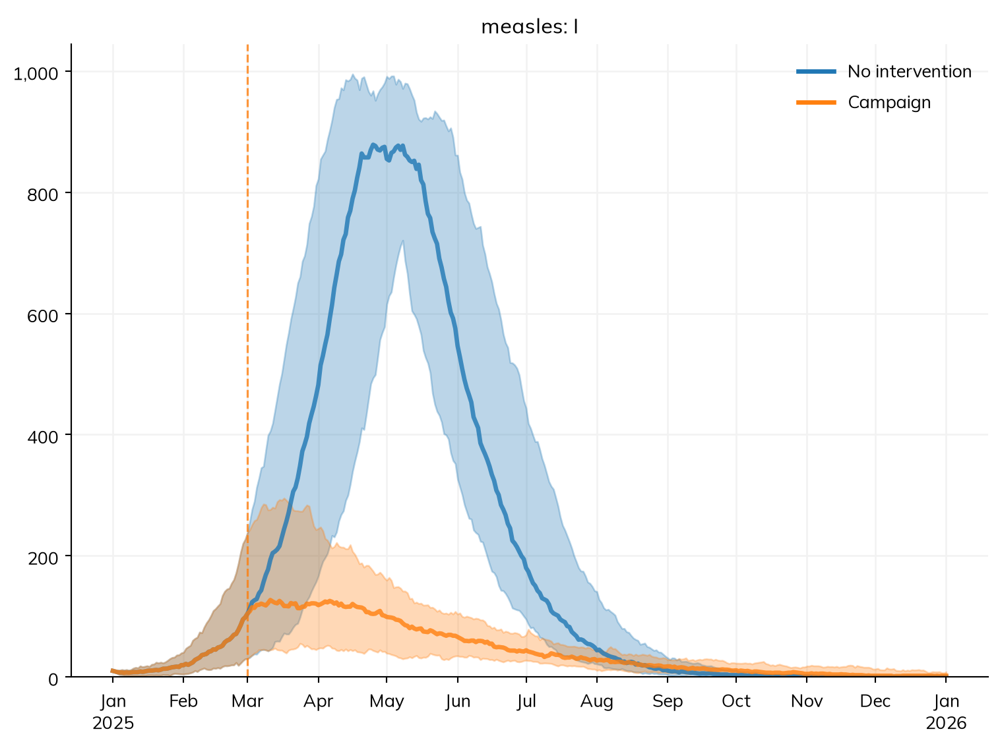
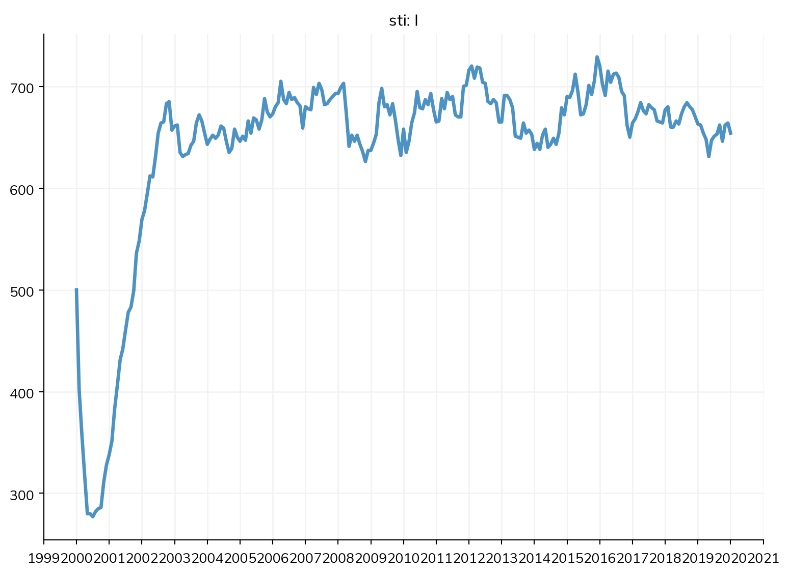
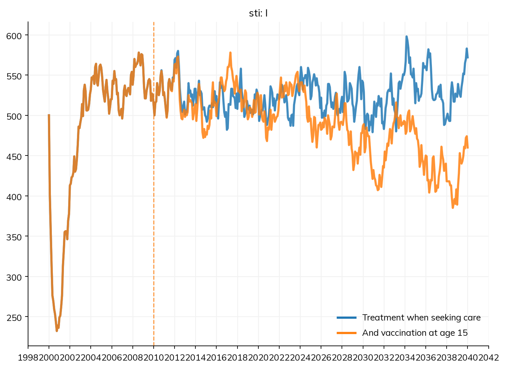

How much difference could a vaccination campaign make? Most models are built to answer questions like this. This tutorial compares a one-off campaign, vaccination over the year, and a response that cuts transmission, as scenarios. It then runs the scenarios many times to see how sure the answer is, and, in an advanced section on agents, turns to interventions that reach particular people because of what has happened to them. By the end of this tutorial, you will be able to:
give a vaccine to a chosen group of people, once or over time, and change a parameter from a given date;
compare scenarios, and run each many times to tell the uncertainty in an outcome from that in a difference;
(advanced) as agents, treat people who seek care, screen and treat, notify partners, and vaccinate people as they reach an age.
The model so far
This is the model from T4 – Mixing: an SEIR model of 100,000 people in three age groups, mixing by a contact matrix. Most people are immune, but only 80% of children:
import starsim as ssS, E, I, R = ss.states('S E I R')beta = ss.par(0.14, bounds=[0.05, 0.5]) # The rate of infection per contact with an infectious person, per dayinfection = S >> E @ beta*I # Infection, at a rate of β times the contacts with infectious peopleprogression = E >> I @ ss.days(10) # Latent for 10 days on averagerecovery = I >> R @ ss.days(8) # Infectious for 8 days on averagemeasles = ss.Disease(infection, progression, recovery,init=dict(R=ss.by(age=[0.8, 0.92, 0.98])), # The fraction immune in each age groupinit_n=dict(I=10), # 10 people infectious at the start)measles.stratify(age={0: 0.3, 15: 0.6, 65: 0.1}) # Ages 0-14, 15-64, and 65+, with the fraction of people in eachcontacts = ss.contacts(ages=[0, 15, 65], matrix=[[10, 6, 1], [3, 8, 1], [3, 6, 3]]) # Contacts a day, between age groupssettings =dict(networks=contacts, total_pop=100_000, start='2025-01-01', stop='2026-01-01')sim = ss.Sim(measles, **settings)sim.run()sim.results.measles.infection.by('age').plot()
Sim: measles, 100,000 people, as an ODE, 2025-01-01 to 2026-01-01
measles: R0 = 15.8 (R = 2.46 at the start, with 11% susceptible), with 10 infectious at the start
Note: people do not age between the age groups, since nobody is born or dies; pass aging=True to age them
Done in 0.005 s; measles: 8,795 infections; at most 934 infectious, on 2025-04-27

library(starsim)states("S E I R")beta <-par(0.14, bounds =c(0.05, 0.5)) # The rate of infection per contact with an infectious person, per daymeasles <-Disease(infection =Transition(S, E, rate = beta * I), # At a rate of β times the contacts with infectious peopleprogression =Transition(E, I, dur =days(10)), # Latent for 10 days on averagerecovery =Transition(I, R, dur =days(8)), # Infectious for 8 days on averageinit =list(R = ss$by(age =c(0.8, 0.92, 0.98))), # The fraction immune in each age groupinit_n =list(I =10) # 10 people infectious at the start)measles$stratify(age =list("0"=0.3, "15"=0.6, "65"=0.1)) # Ages 0-14, 15-64, and 65+, with the fraction of people in eachage_contacts <-contacts(ages =c(0, 15, 65), matrix =rbind(c(10, 6, 1), c(3, 8, 1), c(3, 6, 3))) # Contacts a day, between age groupssim <-Sim(measles, networks = age_contacts, total_pop =100000, start ="2025-01-01", stop ="2026-01-01")sim$run()sim$results$measles$infection$by("age")$plot()
About 89% of people are immune, short of the 1 − 1/R0 ≈ 94% needed with R0 = 16, so about 8,800 people are infected, mostly children.
A vaccination campaign
A vaccine has two parts in a model: the product, what it does to those who get it (here, it cuts the rate at which each vaccinated person is infected by 93%, about what one dose of measles vaccine does), and the delivery, who gets it and when. ss.vaccinate() takes both: the efficacy, the group (who=), the fraction reached (coverage=), and when (when=).
Suppose a campaign on 1 March reaches 80% of children under 15. A scenario is a sim with its own interventions; make one for each, labeled, and run them together with ss.parallel():
MultiSim: 2 runs of 2 scenarios (No intervention, Campaign)
Done in 0.44 s

# A function makes each scenario's sim, with these settingsmake_sim <-function(...) {Sim(measles, networks = age_contacts, total_pop =100000, start ="2025-01-01", stop ="2026-01-01", ...)}campaign <-vaccinate(efficacy =0.93, who = measles$age <15, when ="2025-03-01", coverage =0.8)msim <-parallel(list("No intervention"=make_sim(),"Campaign"=make_sim(interventions = campaign)))msim$plot("measles.infection")
vaccine = ss.Vaccine(efficacy=0.93, leaky=True) # The product: everyone vaccinated is 93% less likely to be infectedcampaign_explicit = ss.vaccinate(vaccine, who=measles.age <15, when='2025-03-01', coverage=0.8, name='campaign') # The delivery: who, when, and how manysettings_explicit =dict(networks=contacts, total_pop=100_000, start='2025-01-01', stop='2026-01-01', dt=ss.days(1), unit='day', solver='ode', aging=False)msim_explicit = ss.parallel({'No intervention': ss.Sim(diseases=measles, **settings_explicit),'Campaign': ss.Sim(diseases=measles, interventions=campaign_explicit, **settings_explicit),})msim_explicit.plot('measles.infection')
MultiSim: 2 runs of 2 scenarios (No intervention, Campaign)
Done in 0.38 s

After the campaign, the outbreak peaks within weeks, since those already infected still fall ill, then dies away. Like real campaigns, it reaches children whether or not they are immune, so most doses go to children already protected. Each delivery has its own results, such as doses delivered:
This vaccine is “leaky”: it gives everyone vaccinated the same partial protection, a 93% lower rate of infection. With leaky=False it is “all or nothing” instead: 93% of those vaccinated are fully protected, and the rest not at all. Vaccines can also wane, need several doses, or protect against transmission rather than infection; see Products.
Vaccination over time, and changing a parameter
Without when=, a delivery reaches people over time: with a rate as the coverage, at that rate while eligible. Here, children under 15 are reached at a rate that would vaccinate 80% of them in a year (ss.probperyear(0.8), which Starsim converts to a probability per day):
gradual <-vaccinate(efficacy =0.93, who = measles$age <15, coverage = ss$probperyear(0.8))
p_day =1- (1-0.8)**(1/365) # The daily probability that gives 0.8 over 365 daysgradual = ss.vaccinate(efficacy=0.93, who=measles.age <15, coverage=ss.probperday(p_day))
Routine childhood immunization instead vaccinates each child at an age (who=ss.at_age(ss.months(9)); see below).
Some interventions change how the disease spreads rather than giving people anything: isolating cases, or keeping unvaccinated children home. ss.modify() changes a parameter from a date (and, with stop=, until another), without overwriting it. Here, a response from 1 March cuts transmission by 30%. Written out, start= is a function of the sim’s date:
defresponse_factor(sim):""" 0.7 from 1 March, and 1 (no change) before """return0.7if sim.now >= ss.date('2025-03-01') else1.0response = ss.modify(measles.pars.beta, multiply=response_factor)
A time series (multiply=ss.timeseries({'2025-03-01': 0.7, '2025-06-01': 0.9})) changes it at several dates. Interventions covers other options, such as changes only for some people, or only while cases are high; Time covers seasons and school terms.
MultiSim: 4 runs of 4 scenarios (No intervention, Campaign, Over the year, Response)
Done in 1.1 s

Vaccinating over the year helps less than the campaign, since most children are reached after the peak. The response slows the outbreak, but it goes on, since nobody is made immune.
msim.summarize() gives each result over the run for each scenario: the total of a flow, such as infections, and the final value of a state. .loc[...] picks one result:
The campaign prevents the most infections but needs the most doses at once; the response prevents fewer but needs no vaccine. Compare peaks and timing as well as totals, and run long enough: an intervention can delay infections past the end of the run.
Many runs
So far each scenario has run once, as an ODE: the expected course of the outbreak. But two identical towns don’t have the same outbreak, since who meets whom differs by chance. A stochastic model draws at random the number of people who move between states each day: with solver='binomial' (a chain-binomial model), it is the same model, solved differently. n_runs=30 runs each scenario 30 times, each with its own random numbers:
MultiSim: 60 runs of 2 scenarios (No intervention, Campaign)
Done in 0.2 s

The plot shows the median of the runs and the band holding 95% of them (lines=True shows every run). msim.summarize() totals each run, then gives the median, the range holding 95% of runs (low and high), the mean, and the standard deviation:
msim.summarize().loc['measles_infection']
median
low
high
mean
std
scenario
No intervention
8,812
8,696
9,012
8,821
86.8
Campaign
2,000
1,076
3,129
2,024
606
Run 1 of each scenario uses the same random numbers (the same seed), as does run 2, and so on. So until 1 March each pair of runs is the same outbreak, and the difference afterwards is the effect of the campaign, not chance. summarize(baseline=...) gives these differences, run by run (negative here means infections averted):
The campaign averts about 6,900 infections in the median, and 5,800 to 7,700 in 95% of pairs. This is only the uncertainty from chance: every run has the same β, immunity, and contacts. Uncertainty in those, often larger, comes from varying them too, as in T6 – Data and calibration. See Scenarios and Random numbers.
Advanced: interventions as agents
The interventions above reach groups of people, which compartments can hold. Others reach particular people because of what has happened to them, such as their infections, test results, and partners, so they run as agents. Each is a product (ss.Vaccine, ss.Diagnostic, or ss.Treatment) and a delivery that gives it to people (ss.vaccinate(), ss.screen(), or ss.treat()), which says who (who=), when (when=: times, an event that has happened to them, or ss.schedule()), and how many (coverage=, capacity=).
A sexually transmitted infection
Measles has no treatment, so this section uses the sexually transmitted infection from T4, an SIS model loosely like gonorrhea, on a sexual network of partnerships lasting about a month. Only 15% of people take part in the network (participation=): a core group, where the infection is concentrated. The network remembers partnerships for a year after they end (memory=), for partner notification. Births and deaths turn the population over:
S, I = ss.states('S I')infection = S >> I @ ss.peract(m2f=0.1, f2m=0.05)*I # Chance of infection per actrecovery = I >> S @ ss.months(6) # Infected for 6 months on average, untreatedsti = ss.Disease(infection, recovery, init_prev=0.05)settings =dict(networks= ss.SexualNet(dur=ss.months(1), memory=ss.years(1), participation=ss.bernoulli(0.15)), # Partnerships of about a month, remembered for a year, among 15% of peopledemographics= [ss.birth(rate=ss.peryear(0.02)), ss.death(rate=ss.peryear(0.02))],n_agents=10_000,start=2000,stop=2020,dt= ss.months(1),verbose=0,)sim = ss.Sim(sti, **settings)sim.run()sim.plot('sti.I')

The infection is endemic, with about 6% of people infected, nearly all in the network.
Treating people who seek care
Suppose 30% of people notice symptoms and seek care within about a month of infection, and are treated with a drug that cures 95%. The drug is the product; ss.treat() delivers it. when=ss.on(sti.infection, delay=...) delivers it to people a time after their infection, drawn for each person, and coverage=0.3 to 30% of them:
drug = ss.Treatment(cure=0.95) # Cures 95% of the people it is given tocare = ss.treat(drug, when=ss.on(sti.infection, delay=ss.uniform(ss.weeks(1), ss.months(2))), coverage=0.3)
Screening, and treating those who test positive
People without symptoms can only be found by screening. Here people aged 15 to 29 are screened every 6 months from 2010, with a test that finds 90% of infections (sensitivity) and gives a false positive for 2% of the uninfected (specificity). Half of those eligible are reached in each round, and those who test positive (screening.positive) are treated. Written out, who is eligible is a function of the sim returning their UIDs, and when is a list of dates:
young = (ss.person.age >=15) & (ss.person.age <30) # Who is eligible: a condition on each person, worked out when it is neededscreening = ss.screen(sensitivity=0.9, specificity=0.98, who=young, when=ss.schedule(every=ss.months(6), start='2010'), coverage=0.5)treatment = ss.treat(drug, when=screening.positive)
drug <- ss$Treatment(cure =0.95) # As above: cures 95% of the people it is given toyoung <- (ss$person$age >=15) & (ss$person$age <30) # Who is eligible: a condition on each person, worked out when it is neededscreening <- ss$screen(sensitivity =0.9, specificity =0.98, who = young, when = ss$schedule(every = ss$months(6), start ="2010"), coverage =0.5)treatment <- ss$treat(drug, when = screening$positive)
defyoung_people(sim):""" The UIDs of the people aged 15 to 29 """ age = sim.people.agereturn age.auids[(age.values >=15) & (age.values <30)]rounds = [f'{year}-{month}-01'for year inrange(2010, 2020) for month in ['01', '07']] + ['2020-01-01'] # Every 6 months from 2010, to the end of the simscreening = ss.screen(sensitivity=0.9, specificity=0.98, who=young_people, when=rounds, coverage=0.5)treatment = ss.treat(drug, when=screening.positive)
who= takes any condition on people or on a module’s states, combined with & (and), | (or), and ~ (not): e.g. young & ~sti.I would screen only young people who aren’t infected.
Notifying partners
With trace=, a delivery reaches the contacts, on the named network, of the people selected by when=, including past partners the network remembers. Here half the partners of those who test positive are treated without testing:
Each intervention finds infections the others miss. The summary gives total infections over 20 years in each scenario:
msim.summarize().loc['sti_infection']
value
scenario
No treatment
22,845
Treatment when seeking care
21,812
And screening
21,011
And partner notification
19,066
The deliveries have results of their own, such as the numbers screened, positive, and partners treated:
sim = msim.sims['And partner notification']print('Screened:', sim.results.screening.delivered.sum())print('Tested positive:', sim.results.screening.positive.sum())print('Treated after testing positive:', sim.results.treatment.delivered.sum())print('... of whom cured:', sim.results.treatment.cured.sum(), '- not cured:', sim.results.treatment.failed.sum(), '- not infected:', sim.results.treatment.unneeded.sum())print('Partners treated:', sim.results.notification.delivered.sum())
Screened: 19416.0
Tested positive: 1072.0
Treated after testing positive: 1072.0
... of whom cured: 677.0 - not cured: 31.0 - not infected: 364.0
Partners treated: 3661.0
About a third of those treated after a positive test weren’t infected: with only a few percent infected, even a 98% specific test gives about half as many false positives as true ones. A treatment’s outcomes, cured, failed, and unneeded, are results and events: ss.treat(..., when=treatment.failed) would give a second-line drug (see Products).
Vaccination as people reach an age
Suppose a vaccine 35% effective is given to 80% of people as they turn 15, from 2010. With ss.at_age(), each person is offered it once, on the step they reach the age. Reaching everyone at risk this way takes decades, so these runs go to 2040:
vaccination = ss.vaccinate(efficacy=0.35, who=ss.at_age(15), start='2010', coverage=0.8)long=dict(settings, stop=2040) # 40 years instead of 20sims = {'Treatment when seeking care': ss.Sim(sti, interventions=care, **long),'And vaccination at age 15': ss.Sim(sti, interventions=[care, vaccination], **long),}msim = ss.parallel(sims)msim.plot('sti.I')print('Doses:', msim.sims['And vaccination at age 15'].results.vaccination.delivered.sum())

Doses: 3393.0
The vaccine makes little difference for ten years, since vaccinated cohorts replace unvaccinated ones only as the population turns over, and by 2040 lowers prevalence only a little (about a tenth over the last year, which at this size is close to the noise between runs).
These deliveries cover most programs. For a rule of your own, who= takes a function of the sim, as in the screening above; an intervention that does something no product does is a module written as code (T8 – Custom modules). Interventions covers capacity, priority, queues, and delays.
Exercises
The campaign above is run on 1 March. How many infections does it prevent if it is run on 1 February instead, or on 1 May? What does this say about how quickly a campaign should follow the first cases?
Add a scenario that combines the campaign and the response (interventions=[campaign, response]). Is its effect the sum of the two on their own? Why not?
Start the outbreak with 2 infectious people rather than 10 (init_n=dict(I=2)), and run the model with no intervention 50 times as a stochastic model. In what fraction of runs does the outbreak die out? Compare this with (1/R)², where R ≈ 2.5 is the reproduction number at the start: roughly the chance that the chains of infection started by both people die out. (This estimate assumes that each chain dies out on its own with a chance of 1/R, as early in an outbreak in a large population where everyone is alike; here people differ by age.)
In the scenario with partner notification, what happens if the partners of people who seek care are notified too (a second notification, with when=care)? Is the effect larger than notifying the partners of those found by screening?
Screening reaches people aged 15 to 29. How much does the effect change if it reaches everyone aged 15 to 49 instead, and how many more tests does it take? Which gives more infections prevented per test?